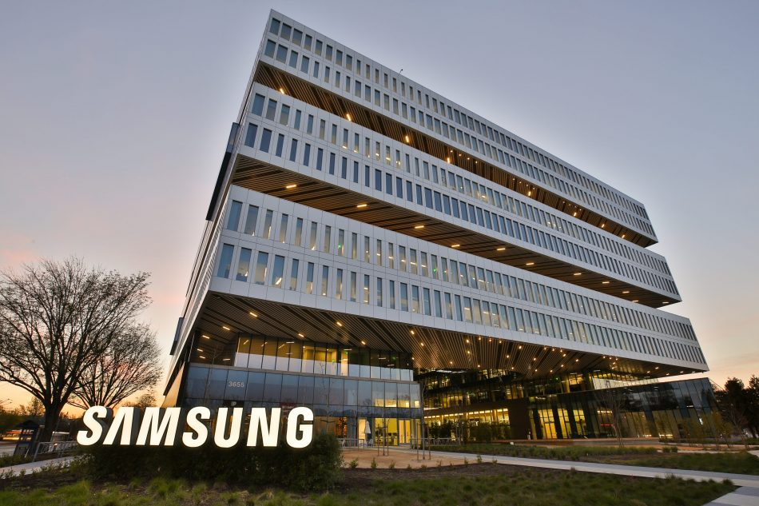

My Journey
This is my professional and educational journey.
-

May 2022 - August 2022
Samsung Internship (San Jose)
For the summer of 2022, I am working at Samsung ACL (San Jose, CA) Office with the GPU software team. The team focuses on designing GPU drivers for Samsung's flagship mobile devices. I am working on optimizing the system characteristics of the ANGLE project, which the GPU drivers use for graphics rendering.
-

Sept 2021 - Present
University of Wisconsin-Madison
I am currently doing my Master's in Computer Sciences. I am trying to focus on the domain of computer systems while exploring other areas of computer science whenever possible. I am also working with the Marius team led by Prof. Shivaram Venkataraman and Prof. Theodoros Rekatsinas, where I worked on a database to graph conversion utility (details).
-

Jul 2020 - Jul 2021
Nvidia, Software Engineer
I worked on Nvidia's Geforce Now cloud gaming service. I was part of QoS (Quality of Streaming) team, where we designed algorithms to dynamically change streaming parameters based on the user's network conditions to provide the best gaming experience.
-

Summer 2019
Samsung R&D (Bangalore) Internship
I worked in Samsung's Smart Devices team, where we worked on developing methods to improve user experience by analyzing data generated from smart devices. I worked on implementing clustering techniques on data to gain insights in user behaviour patterns which can be used to improve user experience.
-

2016 - 2020
IIT Bombay
I graduated from IIT Bombay with B.Tech in Electrical Engineering with Honours and Minor in Computer science. My final year project was under Prof. Madhav Desai, where we worked on building an end-to-end real-time server-based communication link with hardware encryption (details).